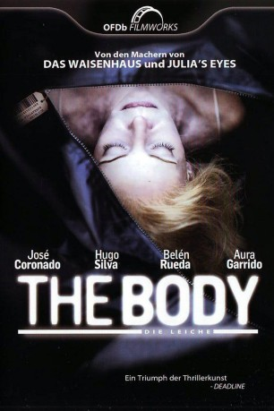

#3918 The Body - Die Leiche
Alternativ: The Body (Englischer Titel)
 
 IMDB-Wertung: 7.5 / 10
IMDB-Wertung: 7.5 / 10  Metascore: 0
Metascore: 0 
Die Ermittlungen im Zusammenhang mit einem merkwürdigen Unfall führen Inspektor Jaime Peña zum örtlichen Leichenschauhaus. Dort stellt sich heraus, daß der Leichnam der kürzlich verstorbenen Geschäftsfrau Mayka Villaverde spurlos aus dem Kühlraum verschwunden ist. Schnell gerät ihr Ehemann unter Verdacht, in irgendeiner Form in den immer mysteriöser werdenden Fall verwickelt zu sein, ist er doch derjenige, der am meisten vom plötzlichen Dahinscheiden seiner mächtigen, wohlhabenden Ehefrau profitiert. Doch in diesem Fall ist nichts so wie es scheint, und je weiter die Ermittlungen voranschreiten, desto rätselhafter erscheinen die Zusammenhänge…
Jahr: 2012
Dauer: 111 Minuten
FSK: 16
Land: Spanien Studio: OFDb FilmworksTonspuren:
Untertitel:
Auflösung: 1080p (1920x808) Größe: 6799 MB
Genre: Thriller, Mystery
Regisseur: Oriol Paulo
Drehbuch: Brian Pimental
Soundtrack:
Darsteller:
 José Coronado als Jaime Peña
José Coronado als Jaime Peña- Hugo Silva als Álex Ulloa
 Belén Rueda als Mayka Villaverde
Belén Rueda als Mayka Villaverde- Aura Garrido als Carla
 Juan Pablo Shuk als Agente Pablo
Juan Pablo Shuk als Agente Pablo- Nausicaa Bonnín als Patricia
- Miquel Gelabert als Vigilante Ángel Torres
- Oriol Vila als Agente Mateos
- Carlota Olcina als Erica Ulloa
- Patrícia Bargalló als Agente Norma
- Mia Esteve als Luna Villaverde
- Sílvia Aranda als Ruth
- Manel Dueso als Agente Carlos
- Pere Brasó als Agente 3
- Albert López-Murtra als Agente 4
- Paco Moreno als Agente Científica
- Aida Oset als Enfermera UCI
- Jordi Planas als Oficial UCI
- Aina Planas als Eva
- Bert Palmen als Hombre restaurante Arabesco
- Camilo García als Agente de transporte
- Cristina Plazas als Dra. Tapia
- Montse Guallar als Gloria Villaverde
- Joaquín Oristrell als Cura , uncredited
Datei: X:\2012(A-F)\Body - Die Leiche, The (2012, FSK16, 1920x808).mkv seit 30.06.2016
Festplatte: HD 2012(A-M)
 Es gibt insgesamt 102 Filme in der Gruppe '2012(A-F)'
Es gibt insgesamt 102 Filme in der Gruppe '2012(A-F)'